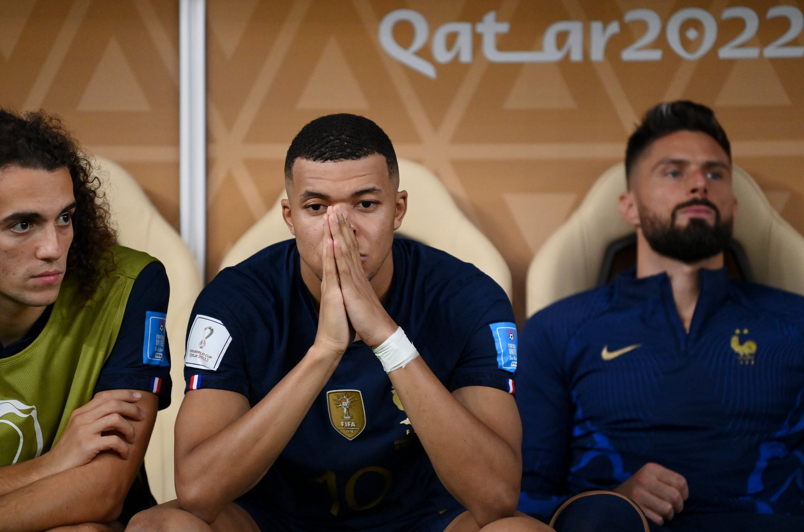

Day 29 - The Final
Argentina v France
The best-ever final of the entire World Cup. Messi and Mbappe both show their class. Messi finally finished the G.O.A.T puzzle
Whoooo. WHAT. A. GAME üò±. Definitely one of the best finals in World Cup history. Had an end-to-end game with 4 goals at the end of normal time and 6 at the end of extra time. This delivered on the major clash of Messi v Mbappe a million times over and I am still not over it. Messi has finally achieved his dream and more than anything it is redemption and vindication. Let me get into what happened before telling you how I felt.
Argentina started really really well. They were on the front foot and started di Maria for the final(He never scored his final goal till now üòâ). He was on the left and Messi on the right and they came out swinging which was completely surprising knowing how well France normally attacks before sitting back. I think overall I think Argentina managed to score before letting France back so that was something(Even though I hated when they equalized üòÖ). The first goal was shrouded in a bit of controversy(Looking back on it the player actually has the slightest contact with the opponent so it is soft but a penalty) when di Maria who was so lethal on that left side terrorizing the likes of Kounde and Dembele managed to get past Dembele who clipped him slightly and it was given. It was put away by none other than Messi. With that goal, he has now become the first person to score in EVERY SINGLE KNOCKOUT GAME from the Round of 16 to the final. üêê standards üò§. The second was a good ball recovery and came to Mac Allister who managed to get in behind and tee up di Maria who finally chipped in with his final goal üòÇ. I think he has scored now in all the finals where Messi has won an international trophy. The Copa America in 2021. The Finalissima this year and now the World Cup. What a way to bow out of the national team Angel üò≠. Your experience will definitely be missed. The first half ended and France was looking down and out because they had…0 shots. Yes, that is right. No shots whatsoever from them all through the first half. Mbappe and Theo Hernandez were marked down well by both Molina and de Paul and Giroud was so isolated that even Romero helped cover on the left and Griezmann didn’t look the same on the pitch too. There were early first-half subs made by France and Mbappe moved centrally to have a bigger threat with his pace with Kolo Muani and Thuram coming on as wingers. The second half began and Argentina suddenly was slowly going on the back foot. THEN. KYLIAN MBAPPE ARRIVED üò∞. 97 seconds. That’s all it took for Kylian Mbappe to level the game. First Kolo Muani was sent through and was fouled by Otamendi and Mbappe buried the pen with amazing power which couldn’t be stopped by Martinez. The next goal was absolutely pure quality. I have no words to describe it. The balls he had to try that lofted pass on the volley first time. It was amazing. It all started however with Messi getting dispossessed by Coman before a few passes and Thuram finally lofted it up for Mbappe on the volley.

I will definitely say something about him in a separate passage after covering the whole match. Don’t worry about that. They did do a switch to an attacking 3 back. Meanwhile, Argentina only made a single change bringing Acuna on for di Maria. France definitely had so many chances to nick it in the end but Argentina held on for extra time. Also of note was a Messi piledriver before the end which was parried well by Lloris (90+6). Montiel was later on brought on in extra time.
Looking it at overall it was rather level. France did have lots of attacking threat but Argentina wasn’t always defending and they found spaces to attack as well.
The story of extra time was Lautaro Martinez. You may be Serie A’s biggest marksman but you were definitely the reincarnation of Higuain from 2014 ü§¶‚Äç‚ôÇ. Where do I begin? He was brought on along with Paredes for Alvarez and de Paul respectively. He misses a chance to put Argentina through in minute 104 when Messi ran through and teed him up only to hit a sliding Upamecano before Montiel’s shot was deflected by Varane. Next, an outside-the-boot pass from Acuna sent Lautaro through and he completely fluffed it(Although that actually should have been a corner since the last touch was by Upamecano) in minute 105. Moving to the second half of extra time. In minute 108, the breakthrough comes after a long ball from Montiel was cushioned by Lautaro for Messi who passed to Fernandez and passed it back to Lautaro beautifully whose shot hit Lloris and Messi was on hand to hit the rebound home. It was cleared but the watch said enough to give it. He was finally back level with Mbappe in the Golden Boot. They had the lead finally. Argentina quickly shifted to a back 5 by bringing on Pezzella for Mac Allister(who has had a brilliant tournament overall üëè and an assist in the final). Later on, however, disaster struck when Mbappe’s shot from the corner struck Montiel on the arm and it was just below the elbow and on the actual arm and so it was given. Mbappe managed to send Emi Martinez the wrong way this time to complete a WORLD CUP FINAL HATTRICK. The last person to do that was Geoff Hurst all the way back in 1966. It’s only them both who have scored a hat trick in the finals. Just saddened it ended the way it did.
Next came the moment that for sure defined the World Cup final because it was absolutely crucial and if France had got their way, they would have won back-to-back World Cups. Minute 119 should have been on target at the very least when Mbappe’s cross found Kolo Muani but he hardly had much contact and it was wide. He, later on, got an ABSOLUTELY GOLDEN CHANCE to give France the cup when a long ball from defense found him and was misjudged by the defender which meant Kolo Muani was one on one with Emi Martinez and he managed to save it. It was an absolutely crucial save and was well done. He made himself big and reduced the space to aim at. That resulted in a counter from Argentina when Messi was through on the right and his cross went begging by none other than…yep you guessed it Lautaro BLOODY Martinez üò†. Mbappe had another chance which he created on his own and if he did score I would have been so angry at Lautaro. Thankfully the scenario never happened. A long ball found Mbappe and he managed to twist past 1, 2, and 3 but the fourth managed to clear it. It was a combination of Enzo disrupting Mbappe and Dybala clearing it.
This meant yet another penalty shootout but there was a problem for France. Mbappe and Thuram were probably the only competent penalty-takers on the team since the likes of Giroud, Griezmann, and Rabiot were all off the field now. It was kind of weird and Argentina had the likes of Lautaro(I know he isn’t the best finisher but he did score the winning pen against the Dutch), Dybala, Montiel and obviously Messi. Mbappe was on target yet again. Martinez guessed right but it was struck powerfully yet again. Messi made no mistake and made Lloris dive the wrong way(Although he almost got back to try and save it üòÖ). Next up, Coman for France and his penalty was saved by Martinez. Dybala, later on, made no mistake going down the middle. The next set was Tchouameni and Paredes where the former dragged his shot wide(E. Martinez got into his head ü§£) and the latter buried his kick. Last set was Kolo Muani and Montiel. Kolo hit a good pen and scored but Montiel managed to score to trigger the celebrations. Messi has done it üò≠. The final piece of his elite G.O.A.T jigsaw is complete after a long time.

The Final lineups of the World Cup
Argentina
France
Lionel Andres Messi
He has finally done it Diego (Maradona). He has finally done it. For me, It all started when I was playing an FC Barcelona career mode with him in FIFA 11 on a PSP and I was immediately hooked even though the first ever match I watched wasn’t your match(Manchester derby 2012), it was the second match I ever saw (2-2 El Clasico 2012 where you scored twice and Ronaldo did the very same). I was hooked by how easy you made football look. The way you used your low center of gravity to keep the ball glued to you and make situations either happen or you make a goal out of nothing. You have been out of this world from the moment you stepped in as a sub under Rijkaard and never looked back. It was meant to be a great love story of you and FC Barcelona but it didn’t last üò¢. Later on, came the comparisons to Diego Maradona when you showed up for your national team. You had the chance of eternal glory in 2014 when you pulled them all the way to the final but it didn’t happen with Mario Gotze being the difference. Copa America and the Centenario. 2 finals yet again to win something for the nation and both of them ended in heartbreak in the absolute worst way possible with both being penalty shootout heartbreak. The voices started getting louder and louder: “CaN’T WiN AnYtHiNg fOr hIs nAtIoNaL TeAm”, “MaRaDoNa wOn a wOrLd cUp. WhAt hAvE YoU WoN?”, “BeEn tO 3 FiNaLs aNd cAn’t eVeN WiN OnE Of tHeM”. The voices were too much at one point. I couldn’t understand it because he did so much for them to even be at that place. He did leave for a while but came back and came back for a vengeance. 2018 just wasn’t meant to be after going out to France. 2022 was a breakthrough year. Fresh after winning his first-ever trophy with the Copa America last year, the pressure was finally off. He won a major tournament for his country besting one of their bitter rivals in Brazil. Next was the Finalissima beating the Euros winners in Italy convincingly. Now he was on a mission to get the final piece. This time, he went all the way and now more than ever has established himself as immortal. He has won every possible trophy in football. You have completed football pretty much üòÇ. More than anything, I feel vindicated by your redemption. The voices have been quietened down. Wonder why? üòú

Also, your recent statement as well saying that you want to continue makes me happy too. Long may it continue. Lionel Messi everyone.
Kylian Mbappe

Honestly, hand on heart take a bow man. The next generation is headed by you and no one else. I don’t think Haaland can conjure a miracle with Norway anytime soon so you are on your own planet in this new generation. Insane to think that at 23 you have hit 12 goals already. I think Klose’s record can be shattered by you easily. Being that young and having such a massive winning mentality because if not for you I think France would be dropping more and more in morale. He was unlucky he didn’t have that many good penalty kick takers and most of those who do take them were subbed off sadly but he still never gave it up. Once you moved centrally you were more and more creative. Buried the penalty to give a bit of hope. Then a moment of absolute pure quality to equalize it. And you did it twice as well. It was mostly Mbappe against Argentina. You scored a damn hat trick in a World Cup final. Only one other person did that before you. Serious serious baller. You got mostly 1.5 decades left easily. As much as I bash your ego, you have an amazing mentality. Let me show some stats:
- 12 goals in 14 World Cup games (The highest ever is 16)
- Only the second player to score a hattrick in the final
- Almost led France to back to back titles since Italy(1934 & 1938) and Brazil(1958 & 1962)
All of this at 23 just shows how bright of a future he’s got. I am looking forward to what you can achieve. Mbappe. Definitely one of the main men of this newer generation so to speak üëè.